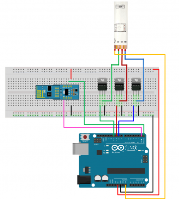

Características eléctricas
- Voltaje de trabajo entre 3V y 3,6V: Según noticias del propio CEO de Espressif, admite tensiones de entrada de 5V e los puertos GPIO.
- Consumos: Dependerá de diferentes factores como el modo en el que esté trabajando el ESP8266, de los protocolos que estemos utilizando, de la calidad de la señal WiFi y sobre todo de si enviamos o recibimos información a través de la WiFi. Oscilan entre los 0,5 μA (microamperios) cuando el dispositivo está apagado y los 170 mA cuando transmitimos a tope de señal.
- Modos de operación: Debido a los sectores a los que va enfocado, wereables, dispositivos del IoT y móviles, el ESP8266 requiere de una gestión de energía eficaz. Dispone de una arquitectura de bajo consumo que trabaja en 3 modos.
- Active mode o modo activo: a pleno rendimiento, Sleep mode o modo dormido: solo el RTC (Real Time Clock) está activo para mantener la sincronización. Se queda en modo alerta de los posibles eventos que le hagan despertar. Mantiene en memoria los datos de conexión y así no hace falta volver a establecer la conexión con la WiFi. Consume entre 0,6 mA y 1 mA, y el Deep sleep o modo en sueño profundo: el RTC está encendido pero no operativo. Debe pasar por el modo dormido antes de despertar. Hay que llevar especial cuidado con los datos ya que en este estado es como si estuviera apagado y todos los datos que no estén almacenados se pierden. Consume alrededor de 20 μA.
Primero procederemos a controlar los leds por medio de wifi. Para ellos
- Las tiras LED se pueden controlar fácilmente con cualquier tipo de microcontrolador. En este ejemplo, utilizamos técnicas de atenuación PWM para controlar la potencia de cada canal RGB de la banda. Dado que cada canal de color puede absorber mucha corriente (del orden de pocos amperes, o más), se requieren transistores de potencia. No intente conectar los canales del LED de la tira directamente a su microcontrolador, dañarán las salidas del microcontrolador o no funcionarán.
- Puede utilizar cualquier potencia NPN BJT o N-Channel MOSFET, pero asegúrese de que el transistor esté capacitado para administrar la corriente que necesite. Por ejemplo, si su tira de LED dibuja 0.2 A / m por canal, si tiene una banda de 5 m necesitará un transistor de hasta 1 A. El paquete común para el transistor de potencia es el TO-220.
- Para sistemas básicos y de bajo costo sugerimos utilizar MOSFET de canal N, como el IRF520N o el ST P55NF06 o el TIP120, son muy populares y de bajo costo. Si no puede obtenerlos, los transistores NPN también son buenos, pero tienen mayores pérdidas de potencia que en los MOSFET, por lo que sugerimos los primeros.
- El Hardware a utilizar es:Arduino UNO Board, ESP-01 WiFi module (with µPanel Firmware), ADP-01 Breadboard adapter, Breadboard, RGB LED Strip y Los Power transistors (we used the N-MOS STP55NF06).
